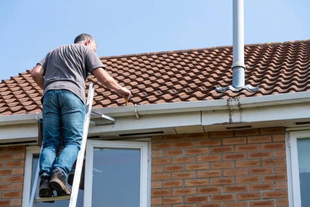

Roofing FAQ
Roofing questions, answered clearly
A quick guide to common questions about inspections, repairs, replacements, maintenance, and emergency roofing service in Los Angeles.
Roof repairs
Roof replacements
Inspections
Maintenance

Tip
Small issues grow fast
A small leak or a few missing shingles can turn into bigger water damage if it is left too long.
Repairs are often enough for isolated damage, but older roofs with repeated leaks, major wear, or widespread damage may be better candidates for replacement.
We prioritize urgent roof leaks and storm-related damage. Fast action helps reduce water intrusion and prevents more expensive interior damage.
We commonly work with shingles, tile roofs, flat roofing systems, and other roofing materials used on residential, commercial, and multi-family properties.
Yes. Preventative maintenance and regular inspections can help catch small problems early and extend the life of your roof.
If possible, have your property address, a short description of the problem, and photos of any visible damage. If you do not have photos, an on-site inspection is still a good first step.
Yes. We work with homeowners, businesses, apartment communities, and property managers on a wide range of roofing needs.

Need help now?
Schedule a roofing inspection in Los Angeles
If you are dealing with a leak, missing shingles, storm damage, or an aging roof, we can help you figure out the right next step.